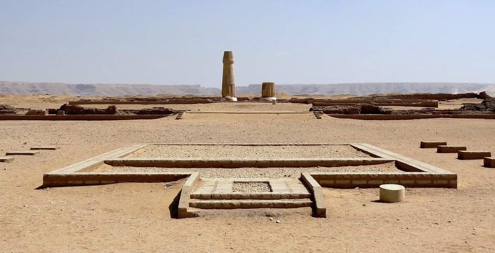
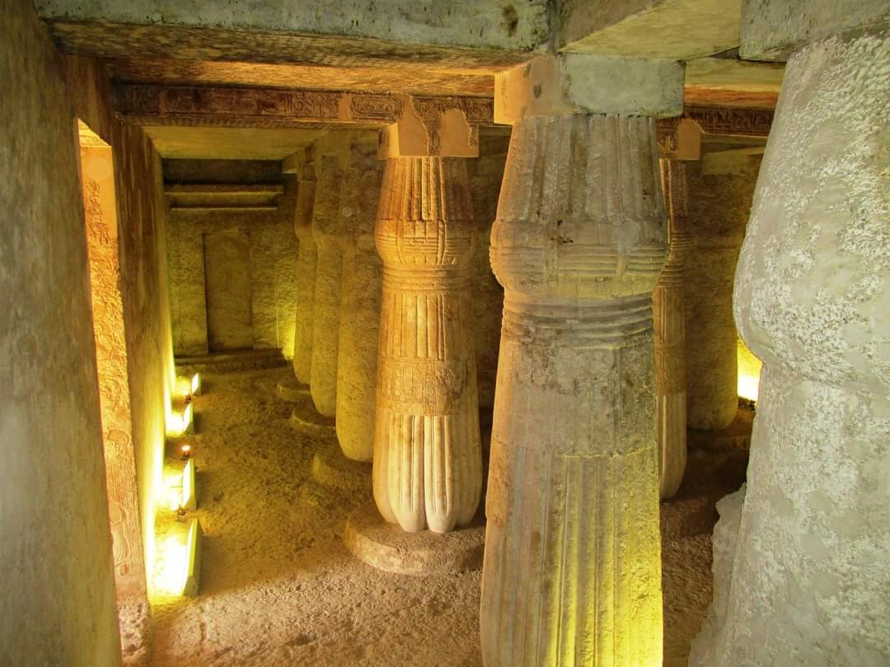
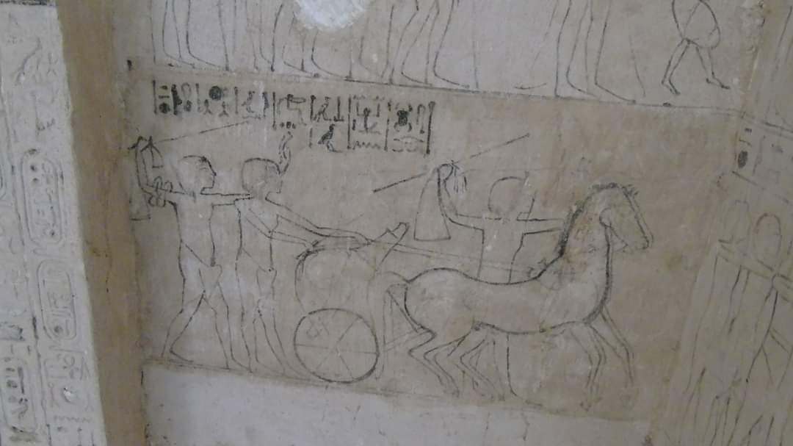

المنيا عاصمة اخناتون
تعد محافظة المنيا واحدة من أبرز المناطق التاريخية في مصر، إذ تمتاز بموقعها الجغرافي الاستراتيجي على ضفاف نهر النيل في صعيد مصر. في عهد الفرعون أخناتون، الذي حكم في الأسرة الثامنة عشرة حوالي عام 1353 قبل الميلاد، كان لهذه المنطقة دور مميز في تطور التاريخ المصري القديم.
وكانت محافظة المنيا في عهد أخناتون تشهد تحولات ثقافية ودينية كبيرة، فقد كانت في قلب التغيرات السياسية التي حملها أخناتون. وقد انعكس هذا التغيير على الآثار والممارسات الدينية، مما جعل المنيا واحدة من أهم المناطق التي ارتبطت بالفترة التي شهدت عبادة آتون.
في العصر الفرعوني كان الإله (تحوت ) هو معبودها موصوفاً بأنه إله الحكمة والمعرفة. وفي العصر القبطي شُيّدت كنيسة السيدة العذراء متزامنة في الوقت الذي شيدت فيه كنيسة القيامة في القدس. وفي أواخر القرن السابع الميلادي وصل إليها الفتح الإسلامي في عهد الخليفة عمر بن الخطاب فأزال حكم الرومان الشرقيين عنها، وانتشر الإسلام فيها بسرعة فصارت الأغلبية العظمى من أهلها تعتنق الإسلام وشُيّدت الكثير من المساجد في أرجائها واستمر ذلك في زيادة في عهد الخليفة عثمان بن عفان والخليفة علي بن أبي طالب وعهود الحكم التي تلت ذلك إلى العصر الحديث.
موقع المنيا في عهد أخناتون:
كانت محافظة المنيا في عصر أخناتون جزءًا من مصر العليا، وهي منطقة تمتاز بكثرة المعابد والمقابر التي تخص كبار رجال الدولة والنبلاء في هذا العصر. كما كانت المنيا مركزًا مهمًا للتجارة والصناعة، لاسيما صناعة النسيج والفخار، وهو ما يمكن أن نراه في الآثار التي تم اكتشافها في تلك الفترة.
عهد أخناتون والتحولات الدينية:
أخناتون الذي يُعتبر مؤسس الديانة الأتونونية (عبادة الإله آتون)، قد أحدث تحولًا كبيرًا في الدين والثقافة في مصر القديمة. ففي عهده، قرر أخناتون نقل العاصمة من طيبة إلى مدينة جديدة أسسها في أفق الجبل في منطقة "تل العمارنة"، التي تقع شمال محافظة المنيا الحالية. هذه الخطوة كانت نتيجة لإيمانه بأن آتون هو الإله الوحيد، وقد تأثرت العديد من مناطق مصر بهذا التحول الديني والسياسي.
تأثير أخناتون على المنيا:
ُفي ظل حكم أخناتون، كانت المنيا تتمتع بالقرب من العاصمة الجديدة "أخيتاتون" (تل العمارنة)، وهذا جعل المنطقة منطلقًا لعدة حملات دعائية ودينية. المنيا كانت تعرف بأنها أحد المراكز الزراعية المهمة في هذا العصر، كما كانت مشهورة بمقابرها التي تحتوي على نقوش ومناظر تمثل مشاهد دينية من عبادة آتون.
الآثار الدينية والثقافية:
على الرغم من أن أغلب الآثار التي تعود إلى فترة حكم أخناتون تم العثور عليها في تل العمارنة، إلا أن المنيا نفسها تحتوي على العديد من المواقع التي ترتبط بالفترة نفسها. فالمعابد التي شيدت في تلك الحقبة في محافظة المنيا، مثل معبد "الأتون" الذي يُعتقد أنه كان قد أقامه كبار رجال الدولة والوزراء لنشر العبادة الأتونونية، تعد من أروع الأمثلة على الفن المعماري في تلك الفترة.
الزراعة والتجارة في المنيا:
كانت المنيا في عهد أخناتون من أهم مناطق الزراعة في صعيد مصر، حيث كانت تعتمد على الري من نهر النيل، ما جعلها منطقة خصبة لزراعة المحاصيل المختلفة مثل القمح والشعير. بالإضافة إلى الزراعة، كانت المنيا من الأماكن التي ازدهرت فيها التجارة، سواء في السلع المحلية أو المستوردة من المناطق الأخرى في مصر. بعد وفاة أخناتون، شهدت المنيا تغييرات كبيرة في سياق إعادة إحياء العبادة التقليدية للإله آمون. فقد عاد الفراعنة التاليون مثل توت عنخ آمون وآي، إلى طيبة وأعادوا العبادة للآلهة التقليدية، ما أدى إلى تراجع تأثير العبادة الأتونونية تدريجيًا.
منطقة آثار تل العمارنة بمركز ديرمواس جنوب محافظة المنيا
تقع على بعد 15 كيلومترا شمال شرق مدينة ديرمواس ، تعد أحد أهم المناطق الأثرية فى مصر فقد كانت تلك المنطقة عاصمة مصر فى عهد اخناتون ونفرتيتى وتضم تاريخ كبير يأتى اليها الوفود السياحية من كل مكان، ومما زاد من اهمية مركز ديرمواس أنه يضم قرية الشيخ عبادة تلك القرية التى كانت مسقط راس مارية القبطية زوجة الرسول صلى الله عليه وسلم، وكذلك مسجد عبادة ابن الصامت أحد الصحابه الاجلاء.
تحتوي مدينه اخت اتون "تل العمارنه " على عدد كبير من المزارات والاثار الثابتة نذكر منها، المدينه الاثريه والتي تحوي بقايا منازل وقصور كبار الموظفين والعامة وبقايا القصور الملكيه، القصر الجنوبي، القصر الشمالي، وبقايا المعابد معبد أتون الصغير، معبد أتون الكبير _معبد الشمس بكوم النعناع) وبقايا مدينه العمال وقريه الأحجار ذلك بجانب عدد من لوحات حدود الملك اخناتون لعل اهمهم واكلمهم لوحة الحدود .
كما تضم 25 مقبرة لكبار الموظفين في عصر الملك اخناتون مقسمه إلى 6 مقابر تقع في قريه تل العمارنة تمثل مجموعه المقابر الشماليه و19 مقبرة تقع في قريه الحاج قنديل تمثل مجموعه المقابر الجنوبيه، إلي جانب المقبرة الملكيه رقم 26وهي تق ع في وادي ملكي بالاضافة إلى مركز الزوار الذي يحتوي على مجموعه من النماذج الاثريه والتخطيطات الهندسيه للمدينه الاثريه المقبرة الملكيه وقاعة للانشطه والمحاضرات ونموذج لاحد منازل العمارنه.
تتتميز هذه الحقبه الزمنيه بالغموض والإثارة التي طالما ارتبطت بالملك اخناتون وثورته الدينيه ونهايه فترة حكمه، كذلك المجموعة الجنوبية من مقابر منطقة آثار تل العمارنة "مقابر الحاج قنديل"تحتوى المجموعة الجنوبية على 19 مقبرة لكبار رجال عصر الملك اخناتون تتميز هذه المقابر باختلاف الطراز المعمارى وكذلك تحوى مجموعة من النقوش والمناظر المميزة واشهر تلك المقابر مقبرة "اى" رقم 25 ومقبرة "ماحو" رقم 9، إلا أن هناك مقابر اخرى مثل مقبرة "توتو" رقم 8 ومقبرة"اينى" رقم 23 ومقبرة "رعموزى" رقم 11